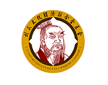
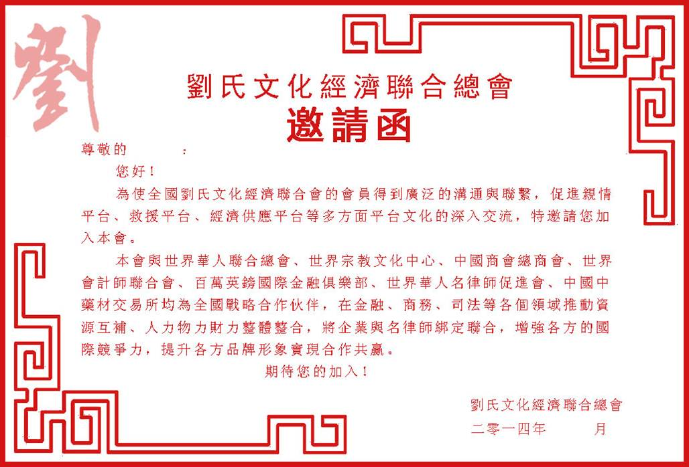
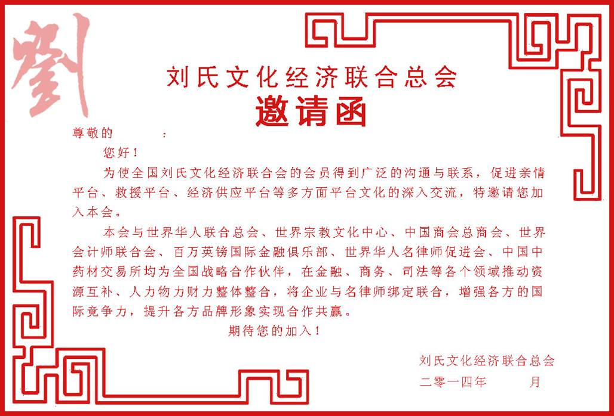

刘氏文化经济联合总会
- 
- 刘氏文化经济联合总会LOGO
刘氏文化经济联合总会简介
如今，在我们周围，存在着一种由不断增长的物、服务和物质财富所构成的惊人的消费和丰盛的现象。它构成人类自然环境中的一种根本变化……人们不再像过去那样受到人的包围，而是受到物的包围。
中国集前现代、现代和后现代于一体的现实导致人们必须面对物的异化和人的异化双重枷锁的纠缠，工厂的雇工、办公室的白领、田地的农民，他们或是有了自由却没有安全，或是有了安全却没有自由，更多的是既不自由也不安全，每个人只是这部社会机器上的一颗毫不起眼的部件，即便损坏那么几颗似乎也不妨社会机器的大碍。现实所有东西的量化和物化导致人们往往被地位、职业、财富左右，宣扬在法律面前人人平等的同时，人们体验到更多的是生活中的高低贵贱，每个人都似乎戴着镣铐艰难前行，甚至没有了方向。人们离快乐似乎越来越远，孤独感成了时代的标签，郁闷成了最流行的瘟疫，摆脱孤独的愿望没有哪个时代像今天这么强烈。在人际冷漠的今天，亲情成了不可多得的联系人与人情感的纽带。
为此，我们计划建立刘氏文化经济联合总会，让我们的会员得到亲人的关怀、精神的快乐、生命的高质量延续。同时，刘氏文化经济联合总会，是集交友、访亲、寻根于一体的亲情平台；也是集法律援助、家庭扶贫、孤寡老人照顾于一身的救援平台；还是以商务协助、资金容积、科技推广于一脉的经济、共赢平台。
邀请函（港澳台）

邀请函

刘氏文化经济联合会总会章程
第一章 总则
第一条 全称：刘氏文化经济联合会
第二条 性质：本会是刘氏宗亲的联谊盛会，是自愿组成的群聚性团体组成。
第三条 宗旨：热爱祖国，遵守国家法律法规；维护政府，促进中华民族大团结；弘扬祖德，润泽后世，增进宗谊，加强资信交流；为世界刘氏寻根问谊分清系别提供依据。从而推动和创建和睦家庭、促进和谐社会，为建设是刘氏家园和祖国的繁荣富强做出贡献。
第二章 组成机构
第四条各地刘氏宗亲联谊组成只有友谊往来，不存在隶属关系。
第五条 本会设会长、名誉会长、顾问、常务会长、常务副会长、副会长、秘书长、常务副秘书长、副秘书长、办公室主任、建立理事会、监事会、顾问委员会。
第六条 本会委员会组成人员产生办法：由大会筹委会推举产生会长，常务会长、常务副会长、副会长，秘书长，常务秘书长，副秘书长、办公室主任。
第七条 本会最高权利机构为会员代表大会，会员代表大会每年举行一次，必须时召开临时会员代表大会。会员代表大会须有三分之二的理事出席方有召开，其决议须经实际到会理事半数以上表决通过，方能生效。其职能是：
*制定和修改本会章程，审议本会工作计划、工作总结；
*选举产生本会会长；
*确定本会的重要议案，审议本会的财务预算和决算；
*决议本会会务工作；
*决定本会终止事宜。
第八条 执行机构。本会的执行机构为理事会。理事会由会员推选的理事若干名组成，由理事会推荐常务理事若干名、常务副会长若干名，常务会长一名，会长一名。每届任期三年。
第九条 理事会职责
*选举或者罢免会长；
*组成工作班子处理日常事务；
*推动会员代表大会的决议及工作计划；
*审批会员入会、退回事宜。
第十条 会长、常务会长、常务副会长职责：
*会长主持本会全面工作；
*主持召开会员代表大会和理事会
*代表本会参与所有社会活动或仪式；
*会长（或授权常会长）负责财务收支审批；
*常务（会长、常务副会长协助会长工作，并各自负责具体分管的工作）。
第十一条 监事会。监事会为本会监督机构，设35人，推选1人为监事会主席，监事会由会员代表大会选举产生，每届任期三年，负责监督理事会的工作，监督执行财务稽核。
第十二条 顾问、名誉会长。本会特别聘请一批热心本会及宗亲事业的，德高望重的亲任本会的顾问、名誉会长；由会长提名后交理事会通过后聘用，以利加强和指导本会工作。
第十三条 日常工作机构。本会日常工作由理事会下辖的秘书处全面负责。秘书处下设办公室、财务部、文化宣传部、谱牒宗祠部、项目资源部。
一、秘书处：正副秘书长及若干名副主任、干事组成。
主要职责：
*负责日常管理工作；
*协调各部、室工作正常运行；
*负责审批会员、团体会员和各地分会机构；
*掌握各相关信息，供理事会参考。
二、办公室：设主任一名，副主任、干事若干名。
主要职责：
*负责办理日常事务；
*负责来信访，文档起草、收发，印信保管。
三、文化宣传部：设部长一名，副部长若干名。
主要职责：
*负责与各地宗亲的联络和宣传工作；
*负责了解各地分会情况
*介绍、推荐有关宗亲信息。
四、财务部：设会计一名、出纳一名。
主要职责：负责捐款、修缮资金、功德箱资金的点数记录，款项收支管理。会计与出纳严格按国家《会计法》和《会计制度》执行。
五、谱牒宗祠部：设部长一名和副部长若干名。
主要职责：
*运用种先进方法，负责收集、整理、归类、保管好有关研谱编谱的谱册、史据资料、会刊原稿、来信来文、文件数据等管理存盘工作。
*做好数字化大宗谱的推广、修订工作。
六、项目资源部：设部长一名，副部长若干名。
主要职责：
*负责登记并了解省内刘氏宗亲的企业产品，企业简介；在《刘氏家国》网点上做好宣传服务。
*负责组织省内刘氏宗亲的企业与外省、世界各国宗亲的企业相互交流、资源整合、优势互补。
*聘请资深企业管理专家，为刘氏宗亲企业提供咨询管理服务。
*负责与投资公司、银行等融资机构合作，帮助刘氏宗亲企业快速发展。
第三章 会员守则
第十四条 会员条件。凡年满十八的刘氏宗亲，品行端正，热爱联谊事业，承认联谊总会章程；经办人申请（含口头），由两名会员推荐，按照联谊总会理事登记、审批，并同会长授予《会员证》后，即为湖北刘氏联谊会会员。
第十五条 会员权利。
本会会员享有：
*充分的发言权、表决权、选举权和被选举权；
*有自由开展族谱学术研究和发表相关研究文章的权利；
*有向本会提出意见或者建议的权利；
*有入会和退会的自由；
*在讨论总会决定时有保留不同意见的权利；
*有获得本会的各种信息数据，并享受本会的信息服务的权利；
*会员有权在其合法权利受到侵害时，向本会申请合法保护；
*有呈报“优秀学子”权利，或在继续学业困难时申请助学金的权利；
*有参加本会各种活动的权利。会员有权在不可预料的困难时，向理事会申请扶贫基金；
第十六条 会员义务
*尊祖敬宗，敦宗睦族，联络宗亲；
*不计名利，积极工作团结互助，无私奉献；
*为家庭、宗亲、国家及全人类福祉努力奉献；
*遵纪守法，忠实勤勉，崇尚文明，礼貌待人；
*实事求是，追求真理，努力多出研谱成果；
*及时汇报研谱、编谱和联谊工作；
*服从本会决议，完成本会交托之任务；
*反映情况，提供相关资料；
*维护联谊总会名誉（严重干扰联谊会活动正常进行和影响联谊会声誉、形象的会员，应接受常务理事委员会的教育、审查、责任追究或直接予以取消会员资格处理。）
第四章 资产管理、使用原则
第十七条 经费来源
*会员、及各担任各职务的宗亲自愿损助的会费；
*宗亲个人的资助和损赠；
*其它机构和单位的资助和损赠；
*其他单位或个人在刘氏总会的帮助下取得了收入；
*企业家联合分会的捐助。
第十八条 费用开支
*本会所需的办公地点、办公设施、用品及办公经费的支出：（含《汉风》的出版和发行费、用于刘氏的各项活动考察、交流、联洛的经费等）；
*本会召开各种会议的费用支出；
*本会专职工作人员的报酬；
*举办刘氏宗族庆典活动及围绕本会工作任务进行工作调研的支出；
*用于联络沟通他姓宗亲组成，研讨中华姓氏文化的支出。
第十九条 费用审核。本会配借具有专业资格的会计人员1名。会计不得兼任出纳。会计人员必须进行会计核算，实行会计监督。会计人员调动工作或离职时，必须与接管人员办清交接手续。所有捐赠的资产全部登记造册，并在本会的年会会议上进行公布。本会资产管理事会下辖的秘书处负责。日常会务开支由会长或常务会长审批报支。年度报表从每年元月1日起至12月31日止。
第二十条 财务审批程度。
本会财务实行独立审批制。
一、属于一般日常办公费用，经联谊会有关会议研究决定的工作人员工资和补贴及福利费用，每年做出一次预算（工作人员工资、补贴和福利费按可比价格计算原则不减），交由会长及常务会长审批；
二、各种会议、讲座、经验交流表彰会的会务费、各种文体活动费、接待费用别做出专项预算。属于固定资产购置的耐用品、为会员服务活动等较大支出，事先编制预算由经手人、秘书长、会长或常会（执行）会长签字后。各项费用支出须有合法认证，并在正式票据上证明用途。
第二十一条 联谊总会在银行专设一个基本账户，根据银行要求办理有关手续，银行账户专户专用，只供本会收支之用。
第二十三 联谊总会配备会计和出纳人员各一名，分工负责。
第二十三条 建立财务档案，妥善保管各种财务资料，不得遗失。
第二十四条 联谊总会资产为会员共有财产，依照国家和社会主管机构有关规定及本会章程进行管理，任何个人和单位不得侵占、私分和挪用。
第二十五条 财务管理实行公开、透明、签约、支出合理的原则，每年报告一次，年底公布，接受广大会员的监督审查。每年的一月份要作出上一年底的财务执行情况报告，并在有关会议上审议。每年度财务报表经总会大会审议通过。
第二十六条 本规定自湖北刘氏联谊总会理事会通之日起执行。
第五章 附则
第二十七条 此章程经刘氏文化经济联合会通过，可以增删修改。
第二十条 本章程解释权为刘氏文化经济联合会所有。